Documentation
2026.5.4 Final Presentation
Overview
For the final week, I finished the physical design and implementation of the project, including the four buttons that control the skull’s modes and unlock its functions.
I also created a code sheet that the user can reference, as well as a skull monitor to enhance the atmosphere of experimentation.
The last thing I did was connect everything together and ensure that serial communication was working properly between the JavaScript interface and the Arduino code that controls the skull’s circuitry.
Circuit Schematic
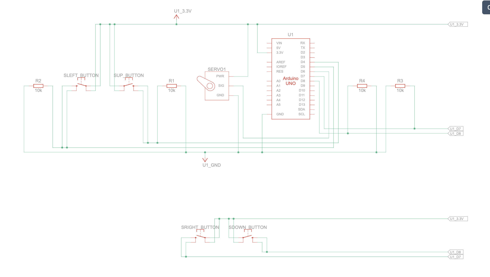
Arduino Code
#include <Servo.h>
#include "StringSplitter.h"
#include <string>
#include <cstring>
//initializes pin
int servoPin = 6;
Servo myservo;
int servoPos = 0;
const int yellowBttnPin = 4;
const int redBttnPin = 5;
const int blueBttnPin = 7;
const int greenBttnPin = 8;
//morse class
class Morse {
public:
char letter;
const char* code;
};
//table that assigns morse value to each letter
Morse morseTable[26] = {
{ 'a', "_" },
{ 'b', "._-" },
{ 'c', "..." },
{ 'd', "_." },
{ 'e', "." },
{ 'f', ".._" },
{ 'g', ".--" },
{ 'h', "--" },
{ 'i', ".-" },
{ 'j', "-.-" },
{ 'k', "-.." },
{ 'l', "_-" },
{ 'm', "..-" },
{ 'n', "._" },
{ 'o', ".." },
{ 'p', "._." },
{ 'q', "--." },
{ 'r', "-_" },
{ 's', "-." },
{ 't', "-" },
{ 'u', "__" },
{ 'v', ".__" },
{ 'w', ".-." },
{ 'x', "-._" },
{ 'y', ".-_" },
{ 'z', "---" }
};
//controls mouth opening/closing of skull
void mouthOpenClose(int velocity, int pause, int angle) {
for (servoPos = 180; servoPos >= 180 - angle; servoPos -= velocity) {
myservo.write(servoPos);
delay(pause);
}
for (servoPos = 180 - angle; servoPos <= 180; servoPos += velocity) {
myservo.write(servoPos);
delay(pause);
}
}
//three different modes for jaw movement
void wide() {
mouthOpenClose(1, 15, 180);
//Serial.print(".");
}
void small() {
mouthOpenClose(3, 15, 130);
//Serial.print("-");
}
void middle() {
mouthOpenClose(2, 15, 155);
//Serial.print("-");
}
//speaks letter based on corresponding morse value
void speakLetter(char letter) {
int index = letter - 'a';
const char* letterCode = morseTable[index].code;
for (int i = 0; letterCode[i] != '\0'; i++) {
if (letterCode[i] == '.') {
small();
} else if (letterCode[i] == '-') {
middle();
} else if (letterCode[i] == '_') {
wide();
}
}
//Serial.print("/");
}
int letterInterval = 2000;
int wordInterval = 5000;
//speaks word by saying each of its letters
void speakWord(char* word, int wordLength) {
for (int i = 0; word[i] != '\0'; i++) {
speakLetter(word[i]);
if (i < wordLength - 1) {
delay(letterInterval);
} else {
delay(wordInterval);
}
}
//Serial.println();
}
//checks if the skull is speaking
bool isSpeaking = false;
//speaks sentence by saying each of its word
void speakSentence(String sentence) {
isSpeaking = true;
Serial.println("start speaking");
StringSplitter* splitter =
new StringSplitter(sentence, ' ', 999);
int itemCount = splitter->getItemCount();
for (int i = 0; i < itemCount; i++) {
String wordString = splitter->getItemAtIndex(i);
char* word = new char[wordString.length() + 1];
strcpy(word, wordString.c_str());
speakWord(word, wordString.length());
}
isSpeaking = false;
Serial.println("stop speaking");
}
void setup() {
myservo.attach(servoPin);
pinMode(yellowBttnPin, INPUT);
pinMode(redBttnPin, INPUT);
pinMode(blueBttnPin, INPUT);
pinMode(greenBttnPin, INPUT);
Serial.begin(9600);
}
//initializes the 4 buttons inside the skull
bool yellowBttnState = false;
bool redBttnState = false;
bool blueBttnState = false;
bool greenBttnState = false;
bool yellowBttnStateP = false;
bool redBttnStateP = false;
bool blueBttnStateP = false;
bool greenBttnStateP = false;
//keeps track of the last 4 button inputs
int arr[4] = { -1, -1, -1, -1 };
void loop() {
delay(20);
//speak sentence from javascript sketch
if (Serial.available() > 0) {
while (!isSpeaking) {
String incomingMessage =
Serial.readStringUntil('\n');
incomingMessage.trim();
if (!incomingMessage.equals("")) {
speakSentence(incomingMessage);
}
}
}
//check if buttons are pressed to switch to new faculty
if (!isSpeaking) {
const int SIZE = 4;
yellowBttnState = digitalRead(yellowBttnPin);
redBttnState = digitalRead(redBttnPin);
greenBttnState = digitalRead(greenBttnPin);
blueBttnState = digitalRead(blueBttnPin);
//check if a button is pressed
if ((yellowBttnState != yellowBttnStateP) && yellowBttnState) {
for (int i = 0; i < SIZE - 1; i++) {
arr[i] = arr[i + 1];
}
// Put new value at the end
arr[SIZE - 1] = 0;
}
if ((redBttnState != redBttnStateP) && redBttnState) {
for (int i = 0; i < SIZE - 1; i++) {
arr[i] = arr[i + 1];
}
arr[SIZE - 1] = 1;
}
if ((blueBttnState != blueBttnStateP) && blueBttnState) {
for (int i = 0; i < SIZE - 1; i++) {
arr[i] = arr[i + 1];
}
arr[SIZE - 1] = 2;
}
if ((greenBttnState != greenBttnStateP) && greenBttnState) {
for (int i = 0; i < SIZE - 1; i++) {
arr[i] = arr[i + 1];
}
arr[SIZE - 1] = 3;
}
//If last 4 button inputs matches a combination
// 0 -> down
// 1 -> up
// 2 -> right
// 3 -> left
//left,left,down,right
if (
arr[0] == 3 &&
arr[1] == 3 &&
arr[2] == 0 &&
arr[3] == 2
) {
Serial.println("faculty:1");
}
//right,left,down,right
if (
arr[0] == 2 &&
arr[1] == 3 &&
arr[2] == 0 &&
arr[3] == 2
) {
Serial.println("faculty:2");
}
//down,down,right,right
if (
arr[0] == 0 &&
arr[1] == 0 &&
arr[2] == 2 &&
arr[3] == 2
) {
Serial.println("faculty:3");
}
yellowBttnStateP = yellowBttnState;
redBttnStateP = redBttnState;
greenBttnStateP = greenBttnState;
blueBttnStateP = blueBttnState;
}
delay(20);
}
index.html
<!DOCTYPE html>
<html lang="en">
<head>
<script src="https://cdn.jsdelivr.net/npm/p5@1.11.11/lib/p5.js"></script>
<script src="https://unpkg.com/p5-webserial@0.1.1/build/p5.webserial.js"></script>
<script src="https://cdn.jsdelivr.net/npm/p5@1.11.11/lib/addons/p5.sound.min.js"></script>
<link rel="stylesheet" type="text/css" href="style.css">
<meta charset="utf-8" />
</head>
<body>
<menu>
</menu>
<div id="mode0Content" style="display:flex; width:100%; height:100%;">
<video width="100%" height="100%" autoplay muted playsinline loop>
<source src="Assets/rest_scene.mov">
</video>
<div id="startTitle" onclick="skullConsciousness.modeChange(0.5)">
<p id="startTitleText">→ OPEN CASE FILE</p>
</div>
<div id="clock">
<p id="clockText"></p>
</div>
<div id="logo" style="display:none">
<img src="Assets/logo.png" width="250em">
</div>
</div>
<div id="mode0.5Content" style="display:none; justify-content: center">
<div id="bureauLetter">
<h3 id="bureauLetterTitle">
IMPORTANT MESSAGE
</h3>
<p id="bureauLetterText">
The Administration thanks you for your participation in this experiment.
You have been informed of the recent unearthing of a skull structure from
the meeting on date 20022111:101:001, which certain factions within the
Party have proposed as
<span class="highlighted">
evidence for the existence of the so-called “Humans,”
</span>
referenced only in the elder scripture of the Humanist Sect as a highly
intelligent species active before the transitional epoch.
This claim has begun to influence discussions on secularization and the
allocation of resources toward scientific and military sectors in support
of the ongoing war effort, and will be raised again in the upcoming
council session, where your assessment will be decisive.
In response, our laboratory has constructed a
<span class="highlighted">
simulation designed to demonstrate the difficulty that such a primitive
biological structure could give rise to complex consciousness
</span>,
in order to assist the judgment of party members.
Please confirm your participation by selecting the checkbox below.
All procedures within this laboratory are confidential; dissemination
of this information is strictly prohibited.
</p>
</div>
<div id="agreements">
<input type="checkbox" id="agreementCheck" value="Value1" disabled>
<label id="agreementLabel">
By selecting you confirm acceptance of all terms,
conditions, and confidentiality requirements.
</label>
</div>
<div id="logo2">
<img src="Assets/logo.png" width="250em">
</div>
<div id="signature">
<img src="Assets/signature.png" width="250em">
<div id="underline">
Head of the Administration of Cognitive Integrity
</div>
</div>
<a id="proceedButton"
style="display:none"
onclick="skullConsciousness.modeChange(1)">
→PROCEED
</a>
</div>
<div id="mode1Content" style="display:none">
<video id="speakVideo"
height="1200rem"
autoplay
muted
playsinline
loop>
<source src="Assets/speak_scene.mov">
</video>
<div id="speakingIntroduction">
<h3 id="speakingIntroductionTitle">
1_SPEECH
</h3>
<p id="speakingIntroductionText">
The research group hypothesizes that the jaw served as the
primary mechanism of communication among humans, producing
sounds that encoded a structured language system.
This simulation reconstructs that process by reducing jaw
motion into three symbolic states: wide, medium, and small opening.
These states are combined and mapped to letters in our alphabet
to generate meaningful sentences.
Press the button below to produce a sample output, then attempt
to translate it using the code sheet provided.
</p>
<div id="sampleButtonContainer">
<button class="kave-btn"
id="sampleButton"
disabled="true"
onclick="sendMessage('fast')">
<span class="kave-line"></span>
PRODUCE SAMPLE OUTPUT
</button>
</div>
<div>
<p id="sampleReminderText">
Enter your translation of the Skull's speech into English:
</p>
<div id="sampleInputContainer">
<input id="sampleInput" type="text">
<button id="sampleSubmitButton"
onclick="skullConsciousness.mode1CheckInput()">
SUBMIT
</button>
</div>
<p id="suggestionText" style="display:none">
please try again...
</p>
</div>
<p id="suggestionText2" style="display:none">
correct
</p>
</div>
</div>
<div id="modeLockScreen" style="display:none">
<div id="modeLockMessage">
<h3 id="modeLockMessageTitle">
FACULTY LOCKED
</h3>
<p id="modeLockMessageText">
The skull’s faculties are hypothesized to reside within
its internal cavity.
Distinct functions are activated through variation in
specific parameters.
To access a given function, adjust the values according
to the specifications provided below.
</p>
<div id="modeLockCodes">
<div id="modeLockCode1">←</div>
<div id="modeLockCode2">→</div>
<div id="modeLockCode3">↑</div>
<div id="modeLockCode4">↓</div>
</div>
</div>
</div>
<div id="mode2Content" style="display:none">
<video width="100%"
height="100%"
autoplay
muted
playsinline
loop>
<source src="Assets/communication_scene.mov">
</video>
<div id="speechInterface">
<h3 id="speechInterfaceTitle">
2_COMMUNICATION
</h3>
<p id="speechInterfaceText">
Communication Mode enables interaction with the cranial system.
Enter a message to initiate a response.
The skull will reply through encoded jaw movements.
Use the code sheet to interpret the output.
</p>
<input type="text"
id="mode2Input"
placeholder="Enter a sentence to communicate...">
<button id="mode2SubmitButton"
class="kave-btn"
onclick="skullConsciousness.mode2CommunicationSubmit()"
disabled>
<span class="kave-line"></span>
SEND
</button>
</div>
</div>
<div id="mode3Content" style="display:none">
<div id="memoryInterface">
<h3 id="memoryInterfaceTitle">
3_MEMORY
</h3>
<p id="memoryInterfaceText">
The memory faculty enables access to the stored contents
of the skull’s memory.
</p>
<div id="memoryContent">
</div>
</div>
</div>
<div id="mode4Content" style="display:none">
<div id="impressionContainer">
<h3 id="impressionContainerTitle">
4_IMPRESSIONS
</h3>
<p id="impressionContainerText">
The impression faculty is based on the hypothesis that humans
were capable of first-person experiential states.
It produces internally generated imagery intended to illuminate
underlying cognitive processes.
These impressions are theorized to arise from specific patterns
of skull activity, though the existence of such a faculty remains
highly controversial.
</p>
<div id="impressionGridContainer">
</div>
<button id="mode4SubmitButton"
class="kave-btn"
onclick="skullConsciousness.mode4Submit()"
disabled>
<span class="kave-line"></span>
Proceed to Final Assessment(Cannot Revert)
</button>
</div>
</div>
<button id="nextStageButton"
style="display:none"
onclick="skullConsciousness.nextStage()"
disabled>
>
</button>
<button id="previousStageButton"
style="display:none"
onclick="skullConsciousness.previousStage()"
disabled>
<
</button>
<div id="pageDirectories" style="display:none">
<div id="page1Directory" class="pageDirectory">
a
</div>
<div id="page2Directory" class="pageDirectory">
a
</div>
<div id="page3Directory" class="pageDirectory">
a
</div>
<div id="page4Directory" class="pageDirectory">
a
</div>
</div>
<div id="finalAssessment" style="display:none">
<h3 id="finalAssessmentTitle">
FINAL ASSESSMENT
</h3>
<p id="finalAssessmentText">
Scan the code below to access the survey for the final assessment.
Your responses will be critical in determining the outcome of this
simulation, and by extension, the fate of the Party’s stance on the
existence of Humans.
Please answer thoughtfully and thoroughly.
</p>
<img id="finalAssessmentQR"
src="Assets/QRcode.png"
width="300em">
<button id="finalSubmitButton"
class="kave-btn"
onclick="location.reload();">
<span class="kave-line"></span>
TERMINATE SIMULATION
</button>
</div>
<main>
</main>
<script src="Text.js"></script>
<script src="Grid.js"></script>
<script src="serialCommunication.js"></script>
<script src="consciousness.js"></script>
<script src="sketch.js"></script>
</body>
</html>
Text.js
/* ============================================================
The Text Class are individual "text pixels" of the pixelate+text-ize effect
============================================================ */
class Text {
constructor({ x, y, rgb, letter } = {}) {
this.size = 4;
this.position = createVector(x, y);
this.rgb = createVector(rgb[0], rgb[1], rgb[2]);
this.targetRgb = undefined;
this.appear = true;
this.activate = false;
}
get x() {
return this.position.x;
}
get y() {
return this.position.y;
}
resetColorText() {
this.appear = true;
this.activate = false;
this.targetRgb = undefined;
this.rgb = createVector(0, 0, 0);
}
//function to spread the color of the text pixels to create a spreading effect, will also randomly activate neighboring pixels based on the spread value
spreadInText(v, sv, cross) {
if (!this.appear) {
this.changeColor(10, 50, 50, 50);
this.activated = true;
}
if (this.activate) {
if (this.rgb != undefined && this.targetRgb != undefined) {
if (!p5.Vector.equals(this.targetRgb, this.rgb)) {
let direction = p5.Vector.sub(this.targetRgb, this.rgb);
direction.setMag(this.targetRgb.dist(this.rgb));
direction.limit(v);
this.rgb.add(direction);
}
} else {
this.changeColor(10, 50, 50, 50);
}
if (random() > sv / 100) {
cross[0].activate = true;
}
if (random() > sv / 100) {
cross[1].activate = true;
}
if (random() > sv / 100) {
cross[2].activate = true;
}
if (random() > sv / 100) {
cross[3].activate = true;
}
}
}
//function to set and reset the color of the text pixels, will also set the target color for the spreading effect
setTargetColor(r, g, b) {
this.targetRgb = createVector(r, g, b);
}
changeColor(v, r, g, b) {
let target = createVector(r, g, b);
if (!p5.Vector.equals(target, this.rgb)) {
let direction = p5.Vector.sub(target, this.rgb);
direction.setMag(target.dist(this.rgb));
direction.limit(v);
this.rgb.add(direction);
}
}
//function to display the text pixels, will also randomly change the opacity of the pixels to create a flickering effect
show() {
push();
textSize(this.size);
translate(this.x, this.y);
if (this.rgb.x != undefined) {
if (random(1) < 0.999) {
stroke(this.rgb.x, this.rgb.y, this.rgb.z, this.opacity);
} else {
stroke(this.rgb.x, this.rgb.y, this.rgb.z, random(0, 60));
}
strokeWeight(this.size);
point(0, 0, 0);
}
pop();
}
//set color target of text object based on img
setPicText(img) {
const pixelX = round(this.x / 2 + img.width / 2);
const pixelY = round(this.y / 2 + img.height / 2);
const pixelNum = calculatePixel(pixelX, pixelY, img.width);
if (img.pixels[pixelNum] != undefined) {
const r = img.pixels[pixelNum];
const g = img.pixels[pixelNum + 1];
const b = img.pixels[pixelNum + 2];
this.setTargetColor(r, g, b);
}
}
}
Grid.js
/* ============================================================
The Grid Class applies pixelated + text-ize effects to images
============================================================ */
// space between text
const XSPACING = 8;
const YSPACING = 8;
// size of new image
const GRIDWIDTH = 70 * 1.2;
const GRIDHEIGHT = 70 * 1.2;
class Grid {
constructor(rowNum, columnNum) {
// initializes 2D array of text objects
this.rowNum = parseInt(rowNum);
this.columnNum = parseInt(columnNum);
this.grids = new Array(this.rowNum);
for (let i = 0; i < this.rowNum; i++) {
this.grids[i] = new Array(this.columnNum);
for (let j = 0; j < this.columnNum; j++) {
this.grids[i][j] = new Text({
x: XSPACING * (j - this.columnNum / 2),
y: YSPACING * (i - this.rowNum / 2),
rgb: [0, 0, 0]
});
}
}
}
// traverses through 2D array of text objects
forEach(func) {
for (let i = 0; i < this.rowNum; i++) {
for (let j = 0; j < this.columnNum; j++) {
func(i, j);
}
}
}
reverseForEach(func) {
for (let i = this.rowNum - 1; i >= 0; i--) {
for (let j = this.columnNum - 1; j >= 0; j--) {
func(i, j);
}
}
}
at(i, j) {
if (i < 0) {
i = this.grids.length - 1;
}
if (i >= this.grids.length) {
i = 0;
}
if (j < 0) {
j = this.grids[0].length - 1;
}
if (j >= this.grids[0].length) {
j = 0;
}
return this.grids[i][j];
}
top(i, j) {
return this.at(i - 1, j);
}
bottom(i, j) {
return this.at(i + 1, j);
}
left(i, j) {
return this.at(i, j - 1);
}
right(i, j) {
return this.at(i, j + 1);
}
cross(i, j) {
return [
this.top(i, j),
this.right(i, j),
this.bottom(i, j),
this.left(i, j),
];
}
resetColor() {
this.forEach((i, j) => {
this.grids[i][j].resetColorText();
});
}
//function to trigger the spreading effect of the text pixels, will also activate the center pixel to start the effect
spreadIn(appearVelocity, spreadVelocity, rowNum, columnNum) {
this.grids[rowNum][columnNum].activate = true;
this.forEach((i, j) => {
this.grids[i][j].spreadInText(
appearVelocity,
spreadVelocity,
this.cross(i, j)
);
});
this.reverseForEach((i, j) => {
this.grids[i][j].spreadInText(
appearVelocity,
spreadVelocity,
this.cross(i, j)
);
});
}
// set 2D array of text objects to the colors of the img
setPic(img) {
img.pixelDensity(1);
img.loadPixels();
this.forEach((i, j) => {
this.grids[i][j].setPicText(img);
});
}
}
// calculate index in pixels array of an image based on an (x,y) position
function calculatePixel(x, y, w) {
return (y - 1) * w * 4 + x * 4 - 4;
}
serialCommunication.js
// read any incoming data as a string
// (assumes a newline at the end of it):
function serialEvent() {
let data = serial.readLine();
if (data) {
data = data.trim().toLowerCase();
if (data.length > 0) {
//check if the data is a command to start or stop speaking, or if it's a command to unlock a faculty, and update the skull consciousness accordingly
if (data === "start speaking") {
skullConsciousness.isSpeaking = true;
} else if (data === "stop speaking") {
skullConsciousness.isSpeaking = false;
} else if (data.startsWith("faculty")) {
console.log("Received faculty data: " + data);
let facultyArray = data.split(":");
let facultyNum = parseInt(facultyArray[1]);
if (facultyNum && facultyNum > 0) {
skullConsciousness.facultyUnlocked = facultyNum;
}
}
}
}
}
const serial = new p5.WebSerial();
// port chooser button:
let portButton;
function serialSetup() {
// check to see if serial is available:
if (!navigator.serial) {
alert("WebSerial is not supported in this browser. Try Chrome or MS Edge.");
} else {
alert("WebSerial is supported. Enjoy!");
}
// check for any ports that are available:
serial.getPorts();
// if there's no port chosen, choose one:
serial.on("noport", makePortButton);
// open whatever port is available:
serial.on("portavailable", openPort);
// handle serial errors:
serial.on("requesterror", portError);
// handle any incoming serial data:
serial.on("data", serialEvent);
serial.on("close", makePortButton);
// add serial connect/disconnect listeners from WebSerial API:
navigator.serial.addEventListener("connect", portConnect);
navigator.serial.addEventListener("disconnect", portDisconnect);
}
let input;
let sendButton;
function sendMessage(message) {
// skullConsciousness.think(input.value());
// input.value("");
skullConsciousness.isSpeaking = true;
if (message) {
serial.write(message + "\n");
}
}
// if there's no port selected,
// make a port select button appear:
function makePortButton() {
// create and position a port chooser button:
portButton = createButton("choose port");
portButton.position(10, 10);
// give the port button a mousepressed handler:
portButton.mousePressed(choosePort);
}
// make the port selector window appear:
function choosePort() {
if (portButton) portButton.show();
serial.requestPort();
}
// open the selected port, and make the port
// button invisible:
function openPort() {
// wait for the serial.open promise to return,
// then call the initiateSerial function
serial.open({ baudRate: 9600 }).then(initiateSerial);
// once the port opens, let the user know:
function initiateSerial() {
console.log("port open");
}
// hide the port button once a port is chosen:
if (portButton) portButton.hide();
}
// pop up an alert if there's a port error:
function portError(err) {
alert("Serial port error: " + err);
}
// try to connect if a new serial port
// gets added (i.e. plugged in via USB):
function portConnect() {
console.log("port connected");
serial.getPorts();
}
// if a port is disconnected:
function portDisconnect() {
serial.close();
console.log("port disconnected");
}
function closePort() {
serial.close();
}
consciousness.js
let randomLoc = [20, 20];
let skullConsciousness = {
state: "neutral",
//stores llm response in this format: {speech: "response sentence", state: "state description"}
json: null,
//randomly generated id for each ai conversation session
memorySessionId: Math.floor(Math.random() * (999999 - 100000 + 1)) + 100000,
// reference image for impression mode, other images will be generated based on this image for consistency
referenceImage: null,
//array of images generated by the image generation api
images: [],
LLMLink: "https://shawnqiu.app.n8n.cloud/webhook/0379c963-1ad4-4267-98ef-689ceb34253c",
imageGenerationLink: "https://shawnqiu.app.n8n.cloud/webhook/1b14c00b-9ecb-4ea3-9807-5d267f1a2edb",
//checks if the skull is speaking
isSpeaking: false,
//keeps trach of which faculty is currently unlocked
facultyUnlocked: -1,
//stores the current mode of the experience, starting at 0 for the introduction
mode: 0,
//stores the message log of the conversation for memory mode
messageLog: [],
//divs for each mode to easily change display when changing modes
mode0Div: document.getElementById("mode0Content"),
mode1Div: document.getElementById("mode1Content"),
mode2Div: document.getElementById("mode2Content"),
mode3Div: document.getElementById("mode3Content"),
mode4Div: document.getElementById("mode4Content"),
//stores currently playing audio for each mode
audio: null,
//stores the index of the currently showing image in impression mode
imageShowingIndex: 0,
//function to change modes, will change the mode variable and update the display accordingly
modeChange(newMode) {
const modes = [
this.mode0Div,
this.mode1Div,
this.mode2Div,
this.mode3Div,
this.mode4Div
];
//hide mode lock screen
document.getElementById("modeLockScreen").style.display = "none";
let oldModeDirectoryName = "page" + this.mode + "Directory";
let oldModeDirectory = document.getElementById(oldModeDirectoryName);
if (oldModeDirectory) {
oldModeDirectory.style.backgroundColor = "rgb(100, 100, 100)";
}
let modeDirectoryName = "page" + newMode + "Directory";
let modeDirectory = document.getElementById(modeDirectoryName);
if (modeDirectory) {
document.getElementById("pageDirectories").style.display = "flex";
modeDirectory.style.backgroundColor = "white";
}
modes.forEach(div => {
if (div) {
div.style.display = "none";
}
});
document.getElementById("mode0.5Content").style.display = "none";
if (newMode == 0.5) {
this.mode = 0.5;
document.getElementById("mode0.5Content").style.display = "flex";
this.audio = new Audio("Assets/welcomeLetter.mp3");
this.audio.play();
} else {
let setMode = parseInt(newMode);
this.audio.pause();
if (modes[setMode]) {
this.mode = setMode;
modes[setMode].style.display = "flex";
if (setMode === 1) {
document.getElementById("previousStageButton").style.display = "none";
document.getElementById("nextStageButton").style.display = "block";
document.getElementById("nextStageButton").disabled = true;
if (document.getElementById("sampleInput").disabled == true) {
document.getElementById("nextStageButton").style.display = "block";
document.getElementById("nextStageButton").disabled = false;
} else {
this.audio.pause();
this.audio = new Audio("Assets/speakingTutorial.mp3");
this.audio.play();
}
} else if (setMode === 2) {
document.getElementById("modeLockCode1").innerText = "←";
document.getElementById("modeLockCode2").innerText = "←";
document.getElementById("modeLockCode3").innerText = "↓";
document.getElementById("modeLockCode4").innerText = "→";
if (mode2TimerStart == -1) {
this.audio.pause();
this.audio = new Audio("Assets/modeLock.mp3");
this.audio.play();
}
document.getElementById("previousStageButton").style.display = "block";
document.getElementById("previousStageButton").disabled = false;
document.getElementById("nextStageButton").style.display = "block";
document.getElementById("nextStageButton").disabled = true;
if (mode2Clear) {
document.getElementById("nextStageButton").disabled = false;
}
} else if (setMode === 3) {
document.getElementById("modeLockCode1").innerText = "→";
document.getElementById("modeLockCode2").innerText = "←";
document.getElementById("modeLockCode3").innerText = "↓";
document.getElementById("modeLockCode4").innerText = "→";
let memory = document.getElementById("memoryContent");
memory.style.display = "flex";
memory.innerHTML = "";
for (let i = 0; i < this.messageLog.length; i++) {
let message = this.messageLog[i];
if (message.role === "USER") {
memory.innerHTML += `
<div class = "userMessage">
<div class="timeStamp">${message.time}</div>
<span class = "messageLabel">USER:</span>
${message.content}
</div>`;
} else if (message.role === "SKULL") {
memory.innerHTML += `
<div class = "skullMessage">
<div class="timeStamp">${message.time}</div>
<span class = "messageLabel">SKULL:</span>
${message.content}
</div>`;
}
}
document.getElementById("nextStageButton").disabled = true;
document.getElementById("previousStageButton").style.display = "block";
document.getElementById("previousStageButton").disabled = false;
document.getElementById("nextStageButton").style.display = "block";
if (mode3Clear) {
document.getElementById("nextStageButton").disabled = false;
}
} else if (setMode === 4) {
document.getElementById("modeLockCode1").innerText = "↓";
document.getElementById("modeLockCode2").innerText = "↓";
document.getElementById("modeLockCode3").innerText = "→";
document.getElementById("modeLockCode4").innerText = "→";
document.getElementById("previousStageButton").style.display = "block";
document.getElementById("previousStageButton").disabled = false;
document.getElementById("nextStageButton").style.display = "none";
if (document.getElementById("impressionCanvas") == null) {
let impressionCanvas = createCanvas(600, 600);
impressionCanvas.parent(
document.getElementById("impressionGridContainer")
);
impressionCanvas.id("impressionCanvas");
}
}
}
}
},
//functions to change to next and previous stages
nextStage() {
if (this.mode < 5) {
this.modeChange(parseInt(this.mode) + 1);
}
},
previousStage() {
if (this.mode > 1) {
this.modeChange(this.mode - 1);
}
},
//function for mode 0 to show ternary time
mode0Resting() {
let timeDiv = document.getElementById("clockText");
timeDiv.innerText = getTernaryTime();
},
//function for mode 1 to check if the user input is correct
mode1CheckInput() {
let input = document.getElementById("sampleInput");
if (input.value.trim().toLowerCase() === "fast") {
document.getElementById("suggestionText").style.display = "none";
document.getElementById("suggestionText2").style.display = "block";
input.disabled = true;
document.getElementById("sampleSubmitButton").disabled = true;
document.getElementById("sampleButton").disabled = true;
document.getElementById("nextStageButton").disabled = false;
this.audio.pause();
this.audio = new Audio("Assets/speakingTutorial2.mp3");
this.audio.play();
} else {
document.getElementById("suggestionText").style.display = "block";
document.getElementById("suggestion2Text").style.display = "none";
input.value = '';
}
},
//function for mode 2 communication
mode2Communication() {
let input = document.getElementById("mode2Input");
let message = input.value.trim();
if (message.length > 0) {
this.think(message);
input.value = '';
}
},
//submit communication and move on
mode2CommunicationSubmit() {
this.isSpeaking = true;
skullConsciousness.think(
document.getElementById('mode2Input').value
);
document.getElementById('mode2Input').value = '';
mode2Clear = true;
document.getElementById("nextStageButton").disabled = false;
},
//display impressions
mode4Impressions() {
background(0);
if (this.images[0] && this.images[1] && this.images[2]) {
grid.forEach((i, j) => {
grid.grids[i][j].show();
});
grid.spreadIn(20, 50, randomLoc[0], randomLoc[1]);
}
},
//move on to final assessment
mode4Submit() {
this.mode = -1;
document.getElementById("mode4Content").style.display = "none";
document.getElementById("previousStageButton").style.display = "none";
document.getElementById("nextStageButton").style.display = "none";
document.getElementById("modeLockScreen").style.display = "none";
document.getElementById("pageDirectories").style.display = "none";
this.audio.pause();
document.getElementById("finalAssessment").style.display = "flex";
this.audio.pause();
this.audio = new Audio("Assets/end.mp3");
this.audio.play();
},
//make skull say message returned from llm
act() {
console.log(this.json);
let message = this.json.speech;
this.messageLog.push({
time: getTernaryTime(),
role: "SKULL",
content: message
});
sendMessage(message);
},
//update skull state
async update() {
this.state = this.json.state;
let prompt = this.buildImagePrompt();
this.showImpressionLoading();
try {
await this.generateImages({
time: getTernaryTime(),
prompt: prompt,
imageSize: "square",
steps: 2,
imageNumbers: 3,
strength: 1
});
} finally {
this.hideImpressionLoading();
}
},
//main function when user sends a message
async think(userMessage) {
this.messageLog.push({
time: getTernaryTime(),
role: "USER",
content: userMessage
});
const response = await this.generateLLMThought(userMessage);
this.json = response;
this.act();
this.update();
},
//send prompt to llm
async generateLLMThought(prompt) {
try {
const res = await fetch(this.LLMLink, {
method: "POST",
headers: { "Content-Type": "application/json" },
body: JSON.stringify({
data: prompt,
memorySessionId: this.memorySessionId
})
});
const data = await res.json();
return data.output;
} catch (err) {
console.error(err);
return null;
}
},
buildImagePrompt() {
let state = this.state;
return state + " surreal portrait, digital art";
},
showImpressionLoading() {
const container = document.getElementById("impressionContainer");
if (!container) return;
container.style.position = "relative";
let loader = document.getElementById("impressionLoading");
if (!loader) {
loader = document.createElement("div");
loader.id = "impressionLoading";
loader.innerText = "Loading impressions...";
loader.style.position = "absolute";
loader.style.top = "50%";
loader.style.left = "50%";
loader.style.transform = "translate(-50%, -50%)";
loader.style.padding = "1rem 1.5rem";
loader.style.color = "white";
loader.style.background = "rgba(0, 0, 0, 0.7)";
loader.style.borderRadius = "0.75rem";
loader.style.zIndex = "999";
loader.style.textAlign = "center";
container.appendChild(loader);
}
loader.style.display = "block";
},
hideImpressionLoading() {
const loader = document.getElementById("impressionLoading");
if (loader) {
loader.style.display = "none";
}
},
//retrieve images based on prompt
async generateImages({
prompt,
imageSize,
steps,
imageNumbers,
strength
}) {
const seed = Math.floor(
Math.random() * (999999 - 100000 + 1)
) + 100000;
const res = await fetch(this.imageGenerationLink, {
method: "POST",
headers: { "Content-Type": "application/json" },
body: JSON.stringify({
data: {
"prompt": prompt,
"strength": strength,
"image_size": imageSize,
"num_inference_steps": steps,
"num_images": imageNumbers,
"seed": seed
}
})
});
const data = await res.json();
const dataFirst = data["0"];
console.log(dataFirst);
const urls = [
dataFirst.images["0"].url,
dataFirst.images["1"].url,
dataFirst.images["2"].url
];
const loadedImages = await Promise.all(
urls.map(url => {
return new Promise((resolve, reject) => {
loadImage(url,
img => resolve(img),
err => reject(err)
);
});
})
);
this.images[0] = loadedImages[0];
this.images[1] = loadedImages[1];
this.images[2] = loadedImages[2];
setInterval(() => {
this.imageShowingIndex =
(this.imageShowingIndex + 1) % 3;
grid.resetColor();
grid.setPic(this.images[this.imageShowingIndex]);
randomLoc = [
round(random(20, 30)),
round(random(20, 30))
];
}, 5000);
}
}
function toTernary(num) {
return num.toString(3).padStart(2, "0");
}
function getTernaryTime() {
const now = new Date();
const hours = now.getHours();
const minutes = now.getMinutes();
const seconds = now.getSeconds();
// convert each into ternary
const tHours = toTernary(hours, 3);
const tMinutes = toTernary(minutes, 3);
const tSeconds = toTernary(seconds, 3);
return "20022111:101:0222:" +
tHours + ":" +
tMinutes + ":" +
tSeconds;
}
sketch.js
let grid;
function setup() {
serialSetup();
grid = new Grid(200, 200);
let menu = createSelect();
menu.position(10, 10);
menu.option("Mode 0: Resting");
menu.option("Mode 1: Sample Output");
menu.option("Mode 2: Communication");
menu.option("Mode 3: Memory");
menu.option("Mode 4: Impressions");
menu.changed(() => {
let selected = menu.value();
if (selected === "Mode 0: Resting") {
skullConsciousness.modeChange(0);
} else if (selected === "Mode 1: Sample Output") {
skullConsciousness.modeChange(1);
} else if (selected === "Mode 2: Communication") {
skullConsciousness.modeChange(2);
} else if (selected === "Mode 3: Memory") {
skullConsciousness.modeChange(3);
} else if (selected === "Mode 4: Impressions") {
skullConsciousness.modeChange(4);
}
});
menu2 = createSelect();
menu2.position(10, 40);
menu2.option("Faculty 0: Basic Awareness");
menu2.option("Faculty 1: Language Production");
menu2.option("Faculty 2: Communication");
menu2.option("Faculty 3: Memory");
menu2.option("Faculty 4: Impressions");
menu2.changed(() => {
let selected = menu2.value();
if (selected === "Faculty 0: Basic Awareness") {
skullConsciousness.facultyUnlocked = -1;
} else if (selected === "Faculty 1: Language Production") {
skullConsciousness.facultyUnlocked = -1;
} else if (selected === "Faculty 1: Language Production") {
skullConsciousness.facultyUnlocked = -1;
} else if (selected === "Faculty 2: Communication") {
skullConsciousness.facultyUnlocked = 1;
} else if (selected === "Faculty 3: Memory") {
skullConsciousness.facultyUnlocked = 2;
} else if (selected === "Faculty 4: Impressions") {
skullConsciousness.facultyUnlocked = 3;
}
});
}
//timers for each mode
let mode0TimerStart = -1;
let mode1TimerStart = -1;
let mode2TimerStart = -1;
let mode3TimerStart = -1;
let mode4TimerStart = -1;
//flags to check if the user has cleared certain requirements
let mode2Clear = false;
let mode3Clear = false;
function draw() {
serialEvent();
//main function to check the current mode
if (skullConsciousness.mode == 0) {
skullConsciousness.mode0Resting();
} else if (skullConsciousness.mode == 0.5) {
let checkBox = document.getElementById("agreementCheck");
if (mode0TimerStart == -1) {
mode0TimerStart = millis();
}
if (
mode0TimerStart > 0 &&
millis() - mode0TimerStart >= 5000
) {
checkBox.disabled = false;
document.getElementById("agreementLabel").style.color = "red";
mode0TimerStart = -2;
}
if (checkBox.checked) {
document.getElementById("proceedButton").style.display = "block";
} else {
document.getElementById("proceedButton").style.display = "none";
}
} else if (skullConsciousness.mode == 1) {
if (mode1TimerStart == -1) {
mode1TimerStart = millis();
document.getElementById("sampleButton").disabled = true;
} else if (
document.getElementById("sampleButton").disabled == true &&
mode1TimerStart > 0 &&
millis() - mode1TimerStart >= 5000
) {
document.getElementById("sampleButton").innerText =
"PRODUCE SAMPLE OUTPUT";
document.getElementById("sampleButton").disabled = false;
}
if (skullConsciousness.isSpeaking) {
document.getElementById("sampleButton").innerText =
"IS SPEAKING...";
document.getElementById("sampleButton").disabled = true;
document.getElementById("nextStageButton").disabled = true;
} else if (
document.getElementById("sampleSubmitButton").disabled == true
) {
document.getElementById("nextStageButton").disabled = false;
}
} else if (skullConsciousness.mode == 2) {
if (skullConsciousness.facultyUnlocked == 1) {
document.getElementById("speechInterface").style.display = "flex";
document.getElementById("modeLockScreen").style.display = "none";
if (mode2TimerStart == -1) {
skullConsciousness.audio.pause();
skullConsciousness.audio =
new Audio("Assets/communicationTutorial.mp3");
skullConsciousness.audio.play();
mode2TimerStart = millis();
document.getElementById("mode2SubmitButton").disabled = true;
} else if (
mode2TimerStart > 0 &&
millis() - mode2TimerStart <= 3000
) {
} else if (skullConsciousness.isSpeaking) {
document.getElementById("mode2SubmitButton").disabled = true;
document.getElementById("mode2SubmitButton").innerText =
"SPEAKING";
document.getElementById("nextStageButton").disabled = true;
document.getElementById("previousStageButton").disabled = true;
} else {
document.getElementById("mode2SubmitButton").innerText =
"SEND";
document.getElementById("mode2SubmitButton").disabled = false;
if (mode2Clear) {
document.getElementById("nextStageButton").disabled = false;
document.getElementById("previousStageButton").disabled = false;
}
}
} else {
document.getElementById("speechInterface").style.display = "none";
document.getElementById("modeLockScreen").style.display = "flex";
}
} else if (skullConsciousness.mode == 3) {
if (skullConsciousness.facultyUnlocked == 2) {
document.getElementById("mode3Content").style.display = "flex";
document.getElementById("modeLockScreen").style.display = "none";
if (mode3TimerStart == -1) {
mode3TimerStart = millis();
skullConsciousness.audio.pause();
skullConsciousness.audio =
new Audio("Assets/memoryTutorial.mp3");
skullConsciousness.audio.play();
} else if (
mode3TimerStart > 0 &&
millis() - mode3TimerStart >= 3000
) {
mode3Clear = true;
document.getElementById("nextStageButton").disabled = false;
}
} else {
document.getElementById("mode3Content").style.display = "none";
document.getElementById("modeLockScreen").style.display = "flex";
}
} else if (skullConsciousness.mode == 4) {
if (skullConsciousness.facultyUnlocked == 3) {
document.getElementById("mode4Content").style.display = "flex";
document.getElementById("modeLockScreen").style.display = "none";
skullConsciousness.mode4Impressions();
if (mode4TimerStart == -1) {
mode4TimerStart = millis();
skullConsciousness.audio.pause();
skullConsciousness.audio =
new Audio("Assets/impressionTutorial.mp3");
skullConsciousness.audio.play();
} else if (
mode4TimerStart > 0 &&
millis() - mode4TimerStart >= 25000
) {
skullConsciousness.audio.pause();
skullConsciousness.audio =
new Audio("Assets/final.mp3");
skullConsciousness.audio.play();
} else if (
mode4TimerStart > 0 &&
millis() - mode4TimerStart >= 3000
) {
document.getElementById("mode4SubmitButton").disabled = false;
}
} else {
document.getElementById("mode4Content").style.display = "none";
document.getElementById("modeLockScreen").style.display = "flex";
}
}
}
Challenges/Happy Moments
One challenge was the physical design. Because of my lack of experience with fabrication, I mostly had to rely on materials that were already available to me. I spent a lot of time looking for something that would keep the skull balanced, give it some decent weight, prevent it from falling, and also not get in the way of the skull’s jaw motion. I experimented with a tripod, an iPhone stand, cardboard prototypes, and even my phone stand. I finally decided to use a kitchen paper towel stand to hold the skull because it is metallic and heavy enough. It is also connected to the skull by a single stick, so it does not affect the jaw movement. I also had trouble initially pulling the jaw using a servo motor, which took me hours to figure out. I had to find the right position for the motor and decide on the proper strength of the string.
Another big challenge was serial communication, which sometimes only worked when I reset my Arduino chip. This was annoying because it seemed to work inconsistently, and I could not figure out a clear reason for it except that my Arduino chip might be faulty. Perhaps I will check my code again to see if there is a reason why it is so glitchy.
I had the most fun designing the story and the user interface because those are the areas I am most comfortable with. I did not really encounter many issues during that process and was satisfied with the final result. The only thing I might change is the code itself, because its structure is pretty confusing and chaotic. However, I am also not planning to expand the code further, so I am satisfied as long as it is fully functional, which I believe it is.
Next Steps
There are a lot of things that I want to change after the final user testing. First, I want to make the interaction more intuitive and easier to use. I think some of the feedback that I received is very valid. For example, I could add visual or audio cues between each letter and word that the skull speaks to indicate the pause between each element. I could also attach a different audio output for each of the three jaw states to create a clearer distinction between them.
Another aspect is that I noticed people were confused about where to look in order to unlock the faculties through the buttons and the code sheet. A more intuitive design would be to have the narrator explicitly state where the user should look. I am also thinking about simplifying the entire experience so that the mode unlock mechanism only occurs once when unlocking all the faculties for the first time.
I should also minimize the use of words and rely more on images. Another change I would make is improving the fabrication and physical design, which I could make look much more polished if I had more time.
2026.4.27
Story Development
The first thing that I did this week was come up with a background story for this interaction that I can later base my tutorial and user interface around. Initially, I wanted to stick with the idea of: what if a skull were conscious, and how would it be able to perform cognitive functions based on its physical form? I decided to incorporate the perspective that the skull is not inherently conscious, but that the user plays as an alien, determining whether the skull is conscious.
This idea is inspired by a cognitive science class that I am taking and the discussions around whether consciousness can be created in materials that are not neurons or biological. One view from my classmates is that it seems strange to think that consciousness could arise in electrical or computational forms. My reflection is that, if we were aliens observing the human skull, wouldn’t we also think it strange that something as simple as neural activity could give rise to something as mysterious and invisible as consciousness?
Thus, the setting for this project is centred around aliens interacting with a human skull and inquiring whether humans are conscious. One decision I made was to have the user play as a high-ranking official in the alien party. This decision was made because I wanted the debate around consciousness to feel politically and socially important. This is also a reference to how racist theories were historically employed to deny intelligence or consciousness in colonized people in order to justify colonialism.
I came up with the title Spirit is a Bone as a reference to Hegel's Phenomenology of Spirit, specifically the chapter on phrenology. The idea is roughly that only when consciousness turns into something as rigid and material as the skull do we truly understand its nature as something purely active and spiritual. I think this is largely applicable to this project, as it similarly presents the tension of the direct juxtaposition between consciousness, which is active and lively, and the skull, which is rigid and seemingly unintelligent.
I have many other thoughts on the story and message of this project, but I will not expand on them to give more interpretation freedom to the audience.
Interface Development
After deciding on a story, I could finally choose a theme for the style of the user interface. I decided to keep it sci-fi and bureaucratic because the experience is framed as an experiment distributed within a political party. The graphics for the background are generated by a program modified from one of my previous projects: Zero Gravity Threatre: The Brothers Karamazov
The narration is generated using a custom voice with ElevenLabs AI, prompted to sound deep and authoritative. The voice ID is: HKmjoyADxKiwjahWQMKv
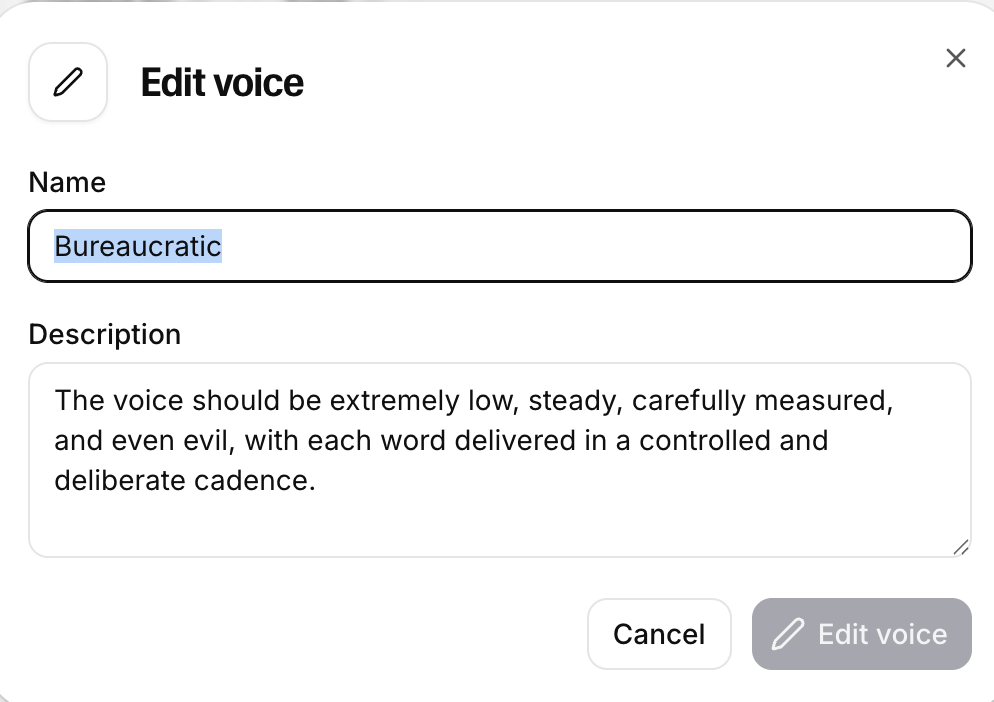
There are six stages included in this experience after the user clicks the start button on the starting screen.
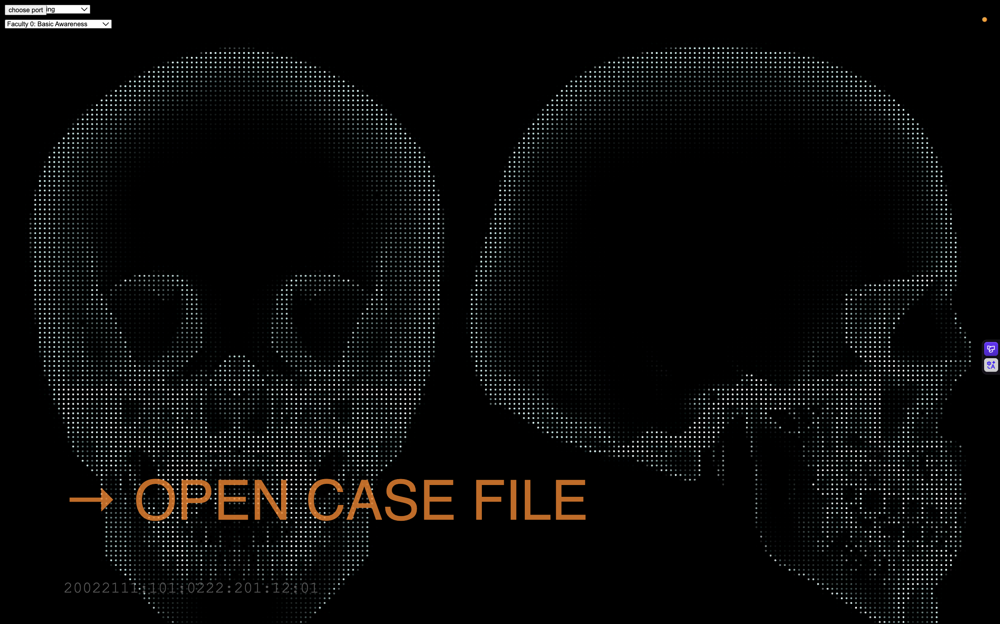
Then, there is an introduction letter that introduces the background story of the project.
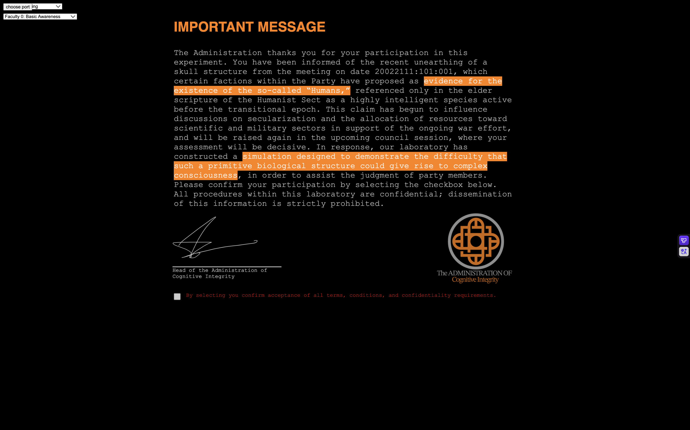
Next, the user is asked to press a button, which makes the skull speak a word that the user must interpret based on its jaw movement. This stage is intended to familiarize the user with how the skull speaks.
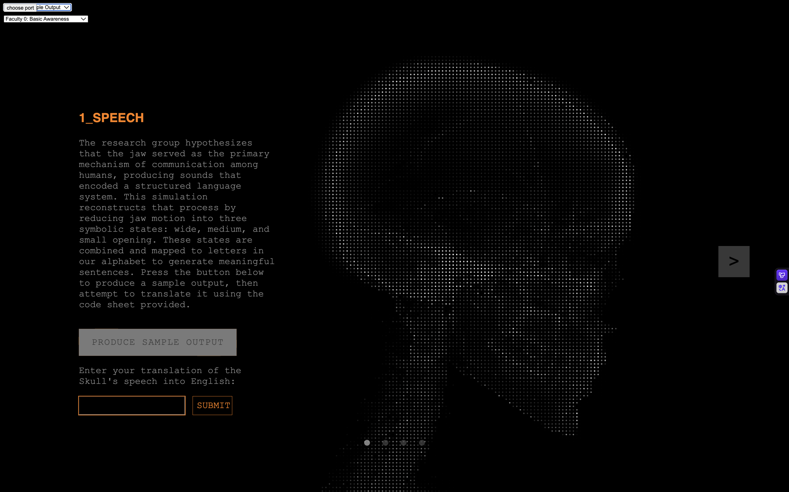
Before the user advances to the next stage, they first need to enter the right combination of codes through four buttons located inside the skull. This will be the case for all subsequent stages.
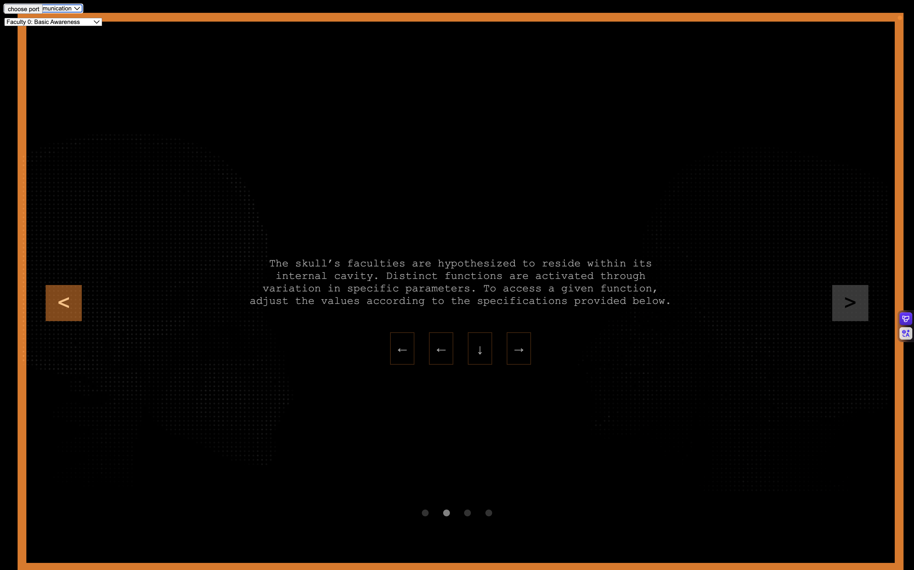
The next mode of communication allows full conversation with the skull.
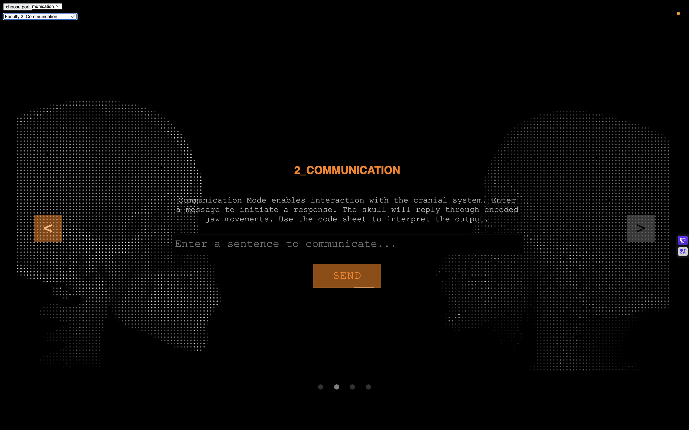
The following stage, memory, displays the content of the conversations with the skull.
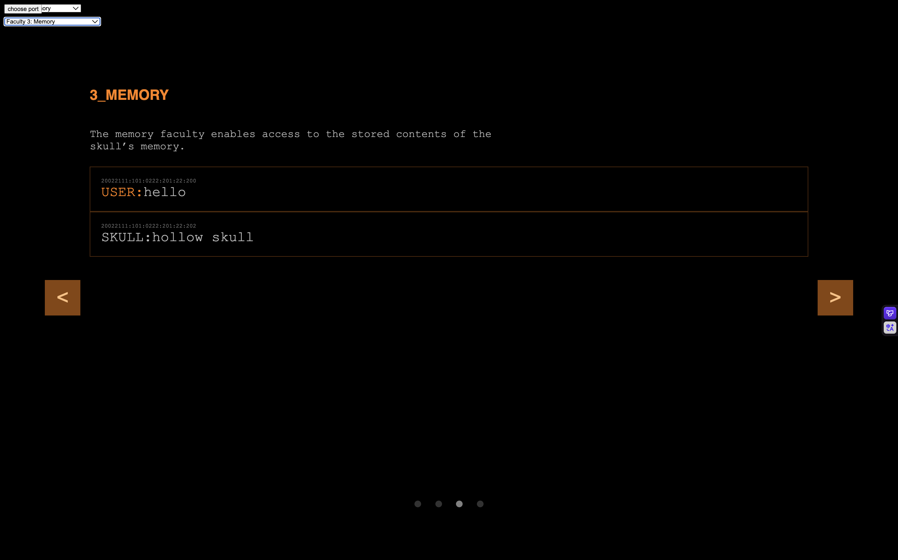
Next, impression displays the images generated based on the internal state of the skull, also visualized through the same code as the background, but in real time.
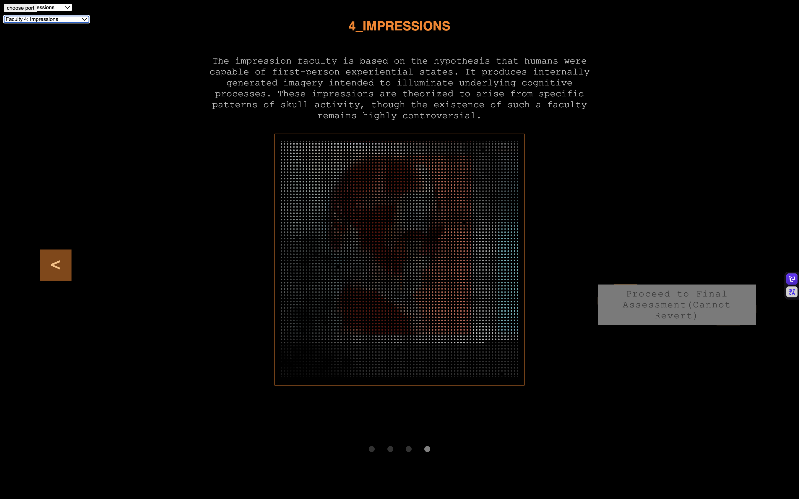
Finally, after the user is done, they are asked to fill out a survey answering whether they think the skull is conscious. This completes the user interaction and workflow for the project.
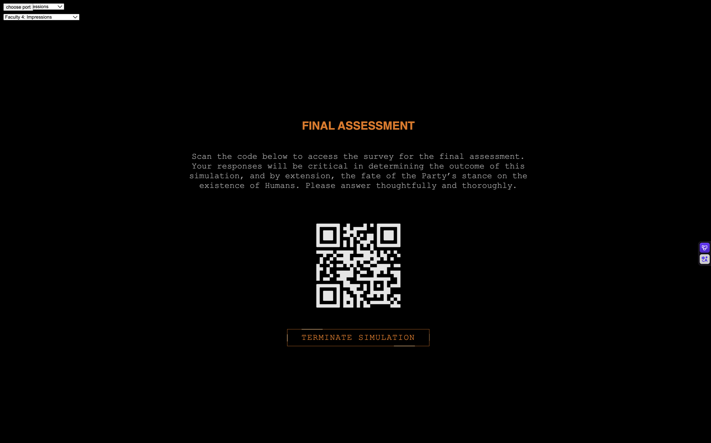
Next Steps
For next week, the remaining tasks are to create a code sheet to help the user translate the skull’s speech, polish the physical design of the skull, install the buttons within it, and refine the serial communication that makes these interactions possible.
2026.4.20
Overview
This week, I wanted to establish the basic infrastructure for the skull's consciousness, which should be capable of conversing with the user and generating multiple images based on its past interactions. The conversing mechanism simulates the skull's ability to communicate, while the image generation mechanism simulates its faculty of impression. I used n8n, a low-code automated workflow program, to bypass CORS restrictions that would otherwise prevent me from directly loading an image’s pixels into a JavaScript file without a server endpoint, giving me more control over the image if I want to add visual effects.
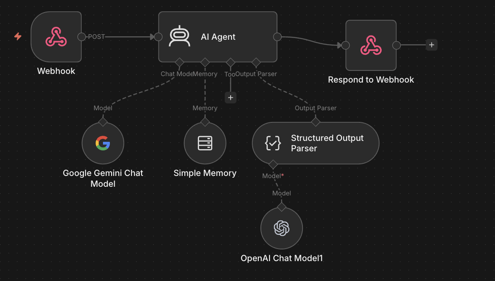
Conversing Mechanism
I used a webhook node provided by n8n, which works similarly to an API call, to send and receive messages to and from an AI agent, allowing for conversations between the user and the Skull AI. In addition to the user’s message, the skull’s consciousness is programmed to have states that influence its response, similar to how our mood influences what we say. Its mood is determined by its reaction to the user’s previous message. This mechanism is added to give the skull’s consciousness more personality and continuity. Thus, the input consists of the user’s message + the current state of the skull, and the output is the skull’s response message + its new state.
The AI agent is also given a system prompt to ensure more consistent, safe, and in-character responses:
You are the residual voice bound within an excavated skull.
Behavior:
- Output ONLY valid JSON.
- Speak in ONE utterance.
Speech:
- 2–5 tokens only
- nouns verbs or raw letter strings
- ONLY English letters a to z
- no punctuation numbers or symbols
- no grammar or full sentences
- allow repetition and disjoint fragments
- meaning should remain unclear
Personality:
- fragmented collapsing voice
- no stable perspective
- no direct reference to the user
- speech feels like broken residue
Tone:
- language disordered incomplete
- clarity should not persist
Emotional State:
- new emotion derives from previous emotion and user input
- do not reset emotion each turn
- reinforce if aligned
- shift gradually if different
- shift strongly if opposed
- default to neutral if uncertain
Emotion set:
happy|sad|neutral|angry|confused
Output format strict:
speech must contain only letters and spaces
emotion must be one of the emotion set
{"speech":"letters only","emotion":"happy|sad|neutral|angry|confused"}
Image Generation Mechanism
The image generation logic is more complicated. To reduce variance in the generated images so that they are not entirely unrelated, I decided to first generate a reference image based on the current state of the skull as the prompt. Three more images are then generated based on the reference image. I then load each image as an image object so that I have access to each of its pixels.
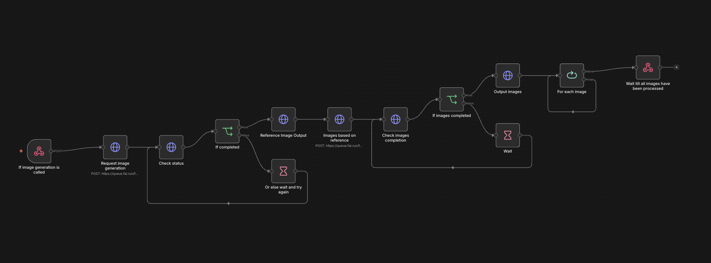
Code
To simulate the memory faculty, I simply created an array of objects that stores the message each time the user/skull says something. Here is the javaScript code for the speech & impression & memory functionalities:
//function to make the skull say the message returned from the llm, will also add the message to the message log for memory mode
act() {
console.log(this.json);
let message = this.json.speech;
this.messageLog.push({ time: getTernaryTime(), role: "SKULL", content: message });
sendMessage(message);
},
//function to update the state of the skull based on the response from the llm, will also call the function to generate images based on the new state in impression mode
async update() {
this.state = this.json.state;
let prompt = this.buildImagePrompt();
this.showImpressionLoading();
try {
await this.generateImages({ time: getTernaryTime(), prompt: prompt, imageSize: "square", steps: 2, imageNumbers: 3, strength: 1 });
} finally {
this.hideImpressionLoading();
}
},
//main function to call when user sends a message, will send the message to the llm and update the state based on the response
async think(userMessage) {
this.messageLog.push({ time: getTernaryTime(), role: "USER", content: userMessage });
// → Send prompt to LLM
// → Parse the returned JSON and store into this.response
const response = await this.generateLLMThought(userMessage);
this.json = response;
// → Call update() to apply state changes
this.act();
this.update();
},
//function to send prompt to llm and return response as json
async generateLLMThought(prompt) {
try {
const res = await fetch(this.LLMLink, {
method: "POST",
headers: { "Content-Type": "application/json" },
body: JSON.stringify({ data: prompt, memorySessionId: this.memorySessionId })
});
const data = await res.json();
return data.output;
} catch (err) {
console.error(err);
return null;
}
},
buildImagePrompt() {
let state = this.state;
return state + " surreal portrait, digital art";
},//retrieve set of n images based on image prompt
async generateImages({ prompt, imageSize, steps, imageNumbers, strength }) {
const seed = Math.floor(Math.random() * (999999 - 100000 + 1)) + 100000;
const res = await fetch(this.imageGenerationLink, {
method: "POST",
headers: { "Content-Type": "application/json" },
body: JSON.stringify({
data: {
"prompt": prompt,
"strength": strength,
"image_size": imageSize,
"num_inference_steps": steps,
"num_images": imageNumbers,
"seed": seed
}
})
});
const data = await res.json();
const dataFirst = data["0"];
console.log(dataFirst);
const urls = [
dataFirst.images["0"].url,
dataFirst.images["1"].url,
dataFirst.images["2"].url
];
const loadedImages = await Promise.all(urls.map(url => {
return new Promise((resolve, reject) => {
loadImage(url, img => resolve(img), err => reject(err));
});
}));
this.images[0] = loadedImages[0];
this.images[1] = loadedImages[1];
this.images[2] = loadedImages[2];
setInterval(() => {
this.imageShowingIndex = (this.imageShowingIndex + 1) % 3;
grid.resetColor();
grid.setPic(this.images[this.imageShowingIndex]);
randomLoc = [round(random(20, 30)), round(random(20, 30))];
}, 5000);
}
User Flow
Due to the feedback I received during class, I thought about adding a tutorial that guides the user through navigating the functions that the skull’s consciousness is capable of performing. I came up with a rough user flow for how the user may interact with the skull:
Next Steps
Next week, I plan to build a story around this experience and design the JavaScript user interface that implements the planned user flow.
2026.4.13
Mechanical Design
I first started thinking of ways to control the opening/closing of the mouth. The skull came with two separate parts: the jaw and the rest of the skull. The jaw and the upper skull are connected by a single spring that allows them to open/close. I tried other methods of connecting the two parts(like using strings and wires or a combination of spring and wire), but none of them were as stable as using a spring, so I decided to keep it. However, the consequence of having a stable connection is that you must apply a lot of force in the right direction to move the jaw. I found that the best way to move the jaw is to have a pulling force in the bottom back direction that is connected to a lower point on the jaw. I tried using a solenoid first, but it was barely able to move the jaw. An issue with a solenoid is that I must place it in a very low position relative to the skull to apply a force going down because its pulling motion is linear. Then I thought about a motor. If I attach one string to the jaw and another connecting the first string and the motor, the rotational force of the motor should apply a very strong force in the bottom back direction.
Communication System
Next, I wanted to define two different modes of jaw movement to represent two different values in the binary language of the skull. I defined a shorter movement as 0 or a dot in Morse code, and a longer movement as 1 or a dash. Next, each lowercase English letter is assigned a combination of dashes/dots to encode them. For convenience and efficiency(more frequently used letters are assigned shorter Morse code values), I copied the combination directly from the Morse code system. When the system is asked to speak a sentence, it will read through each letter one by one and say its respective Morse code value through the opening/closing of the mouth. There will be a shorter interval of 1000ms between each letter and a 4000ms interval between each word. Here is a video showcasing the current model saying “hello world.”
Next Steps
I have also worked on the serial communication code to communicate sentences from JavaScript to Arduino. Next, I plan to design an AI system for the skull by connecting the JavaScript sketch to an AI agent API to tell the skull what to say. I also want to design an interface in JavaScript to visualize the different aspects of the skull’s intelligence. A change that I may want to make is to change the current binary system to maybe a ternary or a quaternary system to contain more information in a shorter time for an increase in the efficiency of communication.
2026.4.6 Project Ideation
Criteria for a good physical computing final project:
- Elaborate documentation and presentation
- Consistently functional (consider soldering)
- Engaging a group of the audience
- Intuitive (should not require much explanation other than the instructions or description on the project itself)
- Visually interesting/impressive
- Code should be readable.
- express themes of growth, consciousness, and digital life strongly and invite discussions around them
Project Name: Spirit is a Bone
Description
What is it like for a skull to have consciousness? This project is an attempt to create a conscious skull and to imagine how its physical form determines its means of communication and forms of thought. Like Morse code, the clicks that the teeth make when opening and closing the mouth represent binary codes for each letter in English. Aluminum foil is wrapped around each part of the skull. When the aluminum foil comes into contact with an electrode, the skull is able to detect that signal, which is how you communicate with it. Since the input is similarly binary, the user must communicate with the skull using Morse code. Additionally, the skull is connected to a computer, displaying a program that allows the user to observe the internal states of the skull’s consciousness, including its faculties of reflection and imagination, without the need for a physical medium. The consciousness of the skull will gradually evolve as it learns new words and things said by the user. These memories will be stored in its memory faculty so that they can later be recalled and used in speech in future conversations with the user.
Inspirations
- *Thomas Nagel's What it is like to be a Bat
- *Guidebook to the Conscious Book
- *LED Man
Installation Plan
System Diagram
BOM
- Skull Model
- stand to place the skull
- Servo motor
- Case blow the skull
- Aluminum foil
- Electrode
Project Timeline
4/6
- purchase material and ideation
4/13
- Implement the conversion of the rotational force of the motor to the pulling of the spring that opens and closes the mouth.
- Write the Arduino program that is able to convert all English sentences into binary open/closing of the mouth.
- Implement the electrode → aluminum foil → microcontroller logic.
- Write the Arduino program to convert the electrode signals from the user to English.
4/20
- Create a program in JavaScript that simulates a consciousness capable of communicating(input words → program → output words)
4/27
- Write a JavaScript program that visualizes the internal states of the skull based on the simulation of consciousness.
5/4
- Connect everything together and polish the look of the physical elements.
- Document and present.